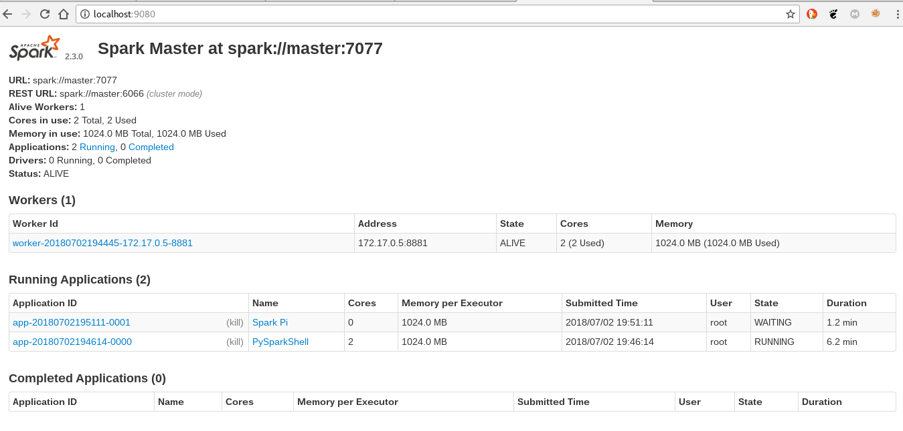

Como correr Apache Spark desde una imagen Docker
Posted on lun 02 julio 2018 in Tutorial Python • 3 min read
En este artículo se explicará la ejecución de Apache Spark usando un contenedor Docker, en vez de usar el procedimiento de instalación de Spark (instalar java, scala y spark).
Apache Spark proporciona una interfaz para la programación de clusters completos con paralelismos de Datos implicito y tolerancia a fallos. Tiene la base de su arquitectura en el llamado RDD (Resilient Distributed Dataset, set de sólo lectura de datos distribuídos a lo largo de un cluster de máquinas que se mantiene en un entorno tolerante a fallos).
Se puede considerar un sistema de computación en clúster de propósito general y orientado a la velocidad, proporciona APIs en Java, Scala, Python y R. También proporciona un motor optimizado que soporta la ejecución de grafos.
También soporta una serie de herramientas de alto nivel como lo son:
- Spark SQL ( para el procesamiento de datos estructurados basada en SQL).
- MLlib para implementar machine learning.
- GraphX para el procesamirnto de grafos.
- Spark Streaming.
Más información en wikipedia.
La imagen docker que se va a usar es la de gettyimages/spark y de github.
- Bajar la imagen docker:
docker pull gettyimages/spark
- Bajar del repositorio github el repositorio de
gettyimages/sparkpara usardocker-compose:
git clone https://github.com/gettyimages/docker-spark.git
- Se cambia al directorio
docker-sparck:
cd docker-spark
4 Archivo Dockerfile:
FROM debian:stretch
MAINTAINER Getty Images "https://github.com/gettyimages"
RUN apt-get update \
&& apt-get install -y locales \
&& dpkg-reconfigure -f noninteractive locales \
&& locale-gen C.UTF-8 \
&& /usr/sbin/update-locale LANG=C.UTF-8 \
&& echo "en_US.UTF-8 UTF-8" >> /etc/locale.gen \
&& locale-gen \
&& apt-get clean \
&& rm -rf /var/lib/apt/lists/*
# Users with other locales should set this in their derivative image
ENV LANG en_US.UTF-8
ENV LANGUAGE en_US:en
ENV LC_ALL en_US.UTF-8
RUN apt-get update \
&& apt-get install -y curl unzip \
python3 python3-setuptools \
&& ln -s /usr/bin/python3 /usr/bin/python \
&& easy_install3 pip py4j \
&& apt-get clean \
&& rm -rf /var/lib/apt/lists/*
# http://blog.stuart.axelbrooke.com/python-3-on-spark-return-of-the-pythonhashseed
ENV PYTHONHASHSEED 0
ENV PYTHONIOENCODING UTF-8
ENV PIP_DISABLE_PIP_VERSION_CHECK 1
# JAVA
ARG JAVA_MAJOR_VERSION=8
ARG JAVA_UPDATE_VERSION=131
ARG JAVA_BUILD_NUMBER=11
ENV JAVA_HOME /usr/jdk1.${JAVA_MAJOR_VERSION}.0_${JAVA_UPDATE_VERSION}
ENV PATH $PATH:$JAVA_HOME/bin
RUN curl -sL --retry 3 --insecure \
--header "Cookie: oraclelicense=accept-securebackup-cookie;" \
"http://download.oracle.com/otn-pub/java/jdk/${JAVA_MAJOR_VERSION}u${JAVA_UPDATE_VERSION}-b${JAVA_BUILD_NUMBER}/d54c1d3a095b4ff2b6607d096fa80163/server-jre-${JAVA_MAJOR_VERSION}u${JAVA_UPDATE_VERSION}-linux-x64.tar.gz" \
| gunzip \
| tar x -C /usr/ \
&& ln -s $JAVA_HOME /usr/java \
&& rm -rf $JAVA_HOME/man
# HADOOP
ENV HADOOP_VERSION 3.0.0
ENV HADOOP_HOME /usr/hadoop-$HADOOP_VERSION
ENV HADOOP_CONF_DIR=$HADOOP_HOME/etc/hadoop
ENV PATH $PATH:$HADOOP_HOME/bin
RUN curl -sL --retry 3 \
"http://archive.apache.org/dist/hadoop/common/hadoop-$HADOOP_VERSION/hadoop-$HADOOP_VERSION.tar.gz" \
| gunzip \
| tar -x -C /usr/ \
&& rm -rf $HADOOP_HOME/share/doc \
&& chown -R root:root $HADOOP_HOME
# SPARK
ENV SPARK_VERSION 2.3.0
ENV SPARK_PACKAGE spark-${SPARK_VERSION}-bin-without-hadoop
ENV SPARK_HOME /usr/spark-${SPARK_VERSION}
ENV SPARK_DIST_CLASSPATH="$HADOOP_HOME/etc/hadoop/*:$HADOOP_HOME/share/hadoop/common/lib/*:$HADOOP_HOME/share/hadoop/common/*:$HADOOP_HOME/share/hadoop/hdfs/*:$HADOOP_HOME/share/hadoop/hdfs/lib/*:$HADOOP_HOME/share/hadoop/hdfs/*:$HADOOP_HOME/share/hadoop/yarn/lib/*:$HADOOP_HOME/share/hadoop/yarn/*:$HADOOP_HOME/share/hadoop/mapreduce/lib/*:$HADOOP_HOME/share/hadoop/mapreduce/*:$HADOOP_HOME/share/hadoop/tools/lib/*"
ENV PATH $PATH:${SPARK_HOME}/bin
RUN curl -sL --retry 3 \
"https://www.apache.org/dyn/mirrors/mirrors.cgi?action=download&filename=spark/spark-${SPARK_VERSION}/${SPARK_PACKAGE}.tgz" \
| gunzip \
| tar x -C /usr/ \
&& mv /usr/$SPARK_PACKAGE $SPARK_HOME \
&& chown -R root:root $SPARK_HOME
WORKDIR $SPARK_HOME
CMD ["bin/spark-class", "org.apache.spark.deploy.master.Master"]
- El archivo docker-compose.yml:
master:
image: gettyimages/spark
command: bin/spark-class org.apache.spark.deploy.master.Master -h master
hostname: master
environment:
MASTER: spark://master:7077
SPARK_CONF_DIR: /conf
SPARK_PUBLIC_DNS: localhost
expose:
- 7001
- 7002
- 7003
- 7004
- 7005
- 7006
- 7077
- 6066
ports:
- 4040:4040
- 6066:6066
- 7077:7077
- 9080:8080
volumes:
- ./conf/master:/conf
- ./data:/tmp/data
worker:
image: gettyimages/spark
command: bin/spark-class org.apache.spark.deploy.worker.Worker spark://master:7077
hostname: worker
environment:
SPARK_CONF_DIR: /conf
SPARK_WORKER_CORES: 2
SPARK_WORKER_MEMORY: 1g
SPARK_WORKER_PORT: 8881
SPARK_WORKER_WEBUI_PORT: 8081
SPARK_PUBLIC_DNS: localhost
links:
- master
expose:
- 7012
- 7013
- 7014
- 7015
- 7016
- 8881
ports:
- 8081:8081
volumes:
- ./conf/worker:/conf
- ./data:/tmp/data
- Se ejecuta
docker-compose up:
docker-compose up
- A continuación se muestra la ejecución del contenedor:
- Ver los procesos:
docker-compose ps
- A continuación el resultado:

Se tiene dos contenedores ejecutandose, uno es el master, que tiene el puerto 4040 abierto, entre otros puertos, y el otro contenedor es el worker.
- Se abre el navegador en http://localhost:9080, a continuación una captura del navegador:

- Ejecutar
pysparkejecuando dentro el contenedor master:
docker exec -it dockerspark_master_1 /bin/bash
11.1 Dentro del contenedor ejecutar pyspark:
bin/pyspark
A continuación se muestra la ejecución:
11.2 Al abrir el navegador se tiene una aplicación corriendo en el spark:

- Para terminar se ejecuta
SparkPidesde el contenedor master:
12.1 Se ingresa al contenedor de master:
docker exec -it dockerspark_master_1 /bin/bash
12.2 Se ejecuta SparkPi
bin/run-example SparkPi 10
12.3 Se muestra la ejecución de la aplicación de SparkPi:

En próximo artículo se usará el spark por medio de pyspark.
¡Haz tu donativo! Si te gustó el artículo puedes realizar un donativo con Bitcoin (BTC) usando la billetera digital de tu preferencia a la siguiente dirección: 17MtNybhdkA9GV3UNS6BTwPcuhjXoPrSzV
O Escaneando el código QR desde la billetera: